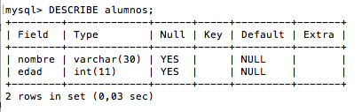
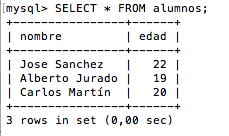

Crear una base de datos en MySQL
Antes de comenzar se asume que se tiene instalado MySQL en el computador.
Lo primero que se debe hacer para poder ejecutar comandos es ejecutar el programa ‘mysql‘, ejecutamos desde la consola el siguiente comando:
$mysql -u usuario -p
No habrá contraseña si estás utilizando algún paquete como XAMPP. Ejecutamos el siguiente comando:
$mysql -u root
Ahora creamos una nueva base de datos mysql. Crearemos una base de datos llamada 'alumnos'
Para crear la base de datos 'alumnos' digitamos el siguiente comando:
CREATE DATABASE alumnos;
Ahora vamos a crear una tabla para almacenar los datos.
Para que mysql sepa a qué base de datos nos vamos a referir cuando introduzcamos los comandos, debemos indicárselo mediante el comando:
USE alumnos;
Vamos a crear una tabla que sólo tendrá dos campos: Nombre y edad
CREATE TABLE alumnos (nombre VARCHAR(30), edad INT);
Para comprobar los campos de la tabla que acabamos de crear podemos utilizar el comando DESCRIBE:
DESCRIBE alumnos;
El resultado será el siguiente:
Para añadir registros a la base de datos usaremos el comando INSERT INTO seguido del nombre de la tabla y posteriormente VALUES seguido de los valores que queremos incluir.
INSERT INTO alumnos VALUES ('Jose Sanchez', 22);
INSERT INTO alumnos VALUES ('Alberto Jurado', 19);
INSERT INTO alumnos VALUES ('Carlos Martín', 20);
Dando como resultado:

Referencias bibliográficas.
Crear una base de datos MySQL desde consola. (16-01-2017). Por Oscar Abad Folgueira. Recuperado el 28 de abril de 2019 de http://www.oscarabadfolgueira.com/crear-una-base-datos-mysql-desde-consola/
Database-mysql.svg. (s.f.). En Wikipedia. Recuperado el 28 de abril de 2019 de https://upload.wikimedia.org/wikipedia/commons/b/b2/Database-mysql.svg
{kind=link}